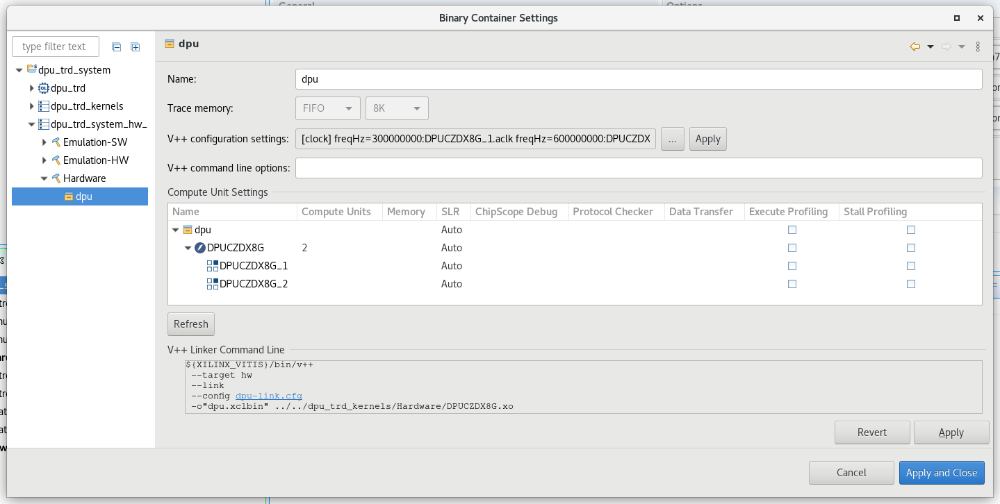

手順 3: プラットフォームのテスト¶
テスト 1: プラットフォーム情報の読み込み¶
手順 2 で設定した Vitis 環境設定では、platforminfo ツールで XPFM プラットフォーム情報をレポートできます。
詳細なログ
# Run in zcu104_software_platform directory platforminfo ./zcu104_custom/export/zcu104_custom/zcu104_custom.xpfm ========================== Basic Platform Information ========================== Platform: zcu104_custom File: /group/bcapps/sven/project/WorkSpace/zcu104_software_platform/zcu104_custom/export/zcu104_custom/zcu104_custom.xpfm Description: zcu104_custom ===================================== Hardware Platform (Shell) Information ===================================== Vendor: xilinx Board: zcu104_custom_platform Name: zcu104_custom_platform Version: 0.0 Generated Version: 2022.1.0 Hardware: 1 Software Emulation: 1 Hardware Emulation: 1 Hardware Emulation Platform: 0 FPGA Family: zynquplus FPGA Device: xczu7ev Board Vendor: xilinx.com Board Name: xilinx.com:zcu104:1.1 Board Part: xczu7ev-ffvc1156-2-e ================= Clock Information ================= Default Clock Index: 2 Clock Index: 1 Frequency: 100.000000 Clock Index: 2 Frequency: 200.000000 Clock Index: 3 Frequency: 400.000000 ================== Memory Information ================== Bus SP Tag: HP0 Bus SP Tag: HP1 Bus SP Tag: HP2 Bus SP Tag: HP3 Bus SP Tag: HPC0 Bus SP Tag: HPC1 ============================= Software Platform Information ============================= Number of Runtimes: 1 Default System Configuration: zcu104_custom System Configurations: System Config Name: zcu104_custom System Config Description: zcu104_custom System Config Default Processor Group: linux_domain System Config Default Boot Image: standard System Config Is QEMU Supported: 1 System Config Processor Groups: Processor Group Name: linux on psu_cortexa53 Processor Group CPU Type: cortex-a53 Processor Group OS Name: linux System Config Boot Images: Boot Image Name: standard Boot Image Type: Boot Image BIF: zcu104_custom/boot/linux.bif Boot Image Data: zcu104_custom/linux_domain/image Boot Image Boot Mode: sd Boot Image RootFileSystem: Boot Image Mount Path: /mnt Boot Image Read Me: zcu104_custom/boot/generic.readme Boot Image QEMU Args: zcu104_custom/qemu/pmu_args.txt:zcu104_custom/qemu/qemu_args.txt Boot Image QEMU Boot: Boot Image QEMU Dev Tree: Supported Runtimes: Runtime: OpenCLクロック情報とメモリ情報が正しく設定されていることを確認できます。
テスト 2: Vector Addition アプリケーション¶
ベクター加算は、最も単純なアクセラレーション PL カーネルです。Vitis では、このアプリケーションを自動的に作成できます。このテストを実行すると、プラットフォームの AXI 制御バス、メモリ インターフェイス、および割り込み設定が正しく機能しているかどうかを確認できます。
次のアプリケーション ディレクトリを作成します。
cd WorkSpace mkdir zcu104_application_vitisVector Addition アプリケーションの作成
[File] → [Switch Workspace] → [other] → [Brose] をクリックして、Vitis のワークスペースを作成したディレクトリに切り替えます。Zcu104_application_vitis はこちらです。
[File] → [New] → [Application Project] をクリックします。
[Next] をクリック
[add] ボタンをクリックして、
zcu104_software_platformフォルダーの下にあるzcu104_customのフォルダーを選択します。プラットフォームとして zcu104_custom を選択し、[Next] をクリックします。
プロジェクトの名前を vadd に設定し、[Next] をクリックします。
ドメインを linux on psu_cortexa53 に設定し、[Sysroot path] を
<full_pathname_to_zcu104_software_platform>/sysroots/cortexa72-cortexa53-xilinx-linux(手順 2 で sdk.sh を実行して作成) に設定します。[Root FS] を rootfs.ext4 に、[Kernel Image] を [Image] に設定します。これらのファイルは、手順 2 で生成されたzcu104_software_platform/pfm/sw_compディレクトリにあります。[Next] をクリックします。[System Optimization Examples] → [Vector Addition] をクリックし、[Finish] をクリックしてアプリケーションを生成します。
[Explorer] ビューで vadd.prj ファイルをダブルクリックして開き、[Active build configuration] を [Emulation-SW] から [Hardware] に変更します。
[Explorer] ビューで vadd_system を選択し、ツールバーの [Build] ボタンをクリックします。
注記: このアプリケーションをエミュレーション モードでテストする場合は、手順 8 で [Active build configuration] を [Emulation-SW] から [Emulation-HW] に変更します。
ボード上での Vector Addition アプリケーションの実行
Vitis がリモート サーバーで実行されている場合は、zcu104_application_vitis/vadd_system/Hardware/package/sd_card.img をローカルにコピーします。
SD カード イメージライター アプリケーション (Windows では Etcher、Linux では dd など) を使用して sd_card.img を SD カードに書き込みます。
SD ブート モードで ZCU104 ボードを SD カードを使用してブートします。
ザイリンクス ダウンロード ウェブサイトからの共通イメージを使用している場合は、ここをクリックすると表示される手順に従ってアプリケーションを実行します。
自動マウントされた FAT32 パーティションに移動します
cd /run/media/mmcblk0p1vadd アプリケーションを実行します
./simple_vadd krnl_vadd.xclbin
プログラムの結果と XRT のデバッグ情報が表示されます。
TEST PASSED
PetaLinux プロジェクトからのイメージを使用している場合は、ここをクリックすると表示される手順に従ってアプリケーションを実行します。
まず、ユーザー
petalinuxでログインし、新しいパスワード (sudo パスワード) を設定する必要があります。システムにログインします。
petalinux login:petalinux You are required to change your password immediately (administrator enforced). New password: Retype new password: petalinux:~$ sudo su We trust you have received the usual lecture from the local System Administrator. It usually boils down to these three things: #1) Respect the privacy of others. #2) Think before you type. #3) With great power comes great responsibility. Password: petalinux:/home/petalinux#
自動マウントされた FAT32 パーティションに移動します
petalinux:/home/petalinux# cd /run/media/mmcblk0p1/
vadd アプリケーションを実行します
./simple_vadd krnl_vadd.xclbin
プログラムの結果と XRT のデバッグ情報が表示されます。
TEST PASSED
エミュレーション モードでのベクター加算アプリケーションのテスト (オプション)
QEMU を起動するには、Vitis メニューから [Xilinx] → [Start/Stop Emulator] をクリックします。プロジェクトは vadd で、コンフィギュレーションは [Emulation - HW] です。[Start] をクリックします。Linux が起動するまで待ちます。root/root でログインします。
vadd プロジェクト (vadd_system システム プロジェクトではない) を右クリックし、[Run] → [Launch on Emulator] をクリックします。
結果が [Console] タブに表示されます。
Loading: './binary_container_1.xclbin' TEST PASSED
ベクター加算のスクリプトを使用した実行¶
作成したカスタム プラットフォーム上にテスト アプリケーションを作成するスクリプトが用意されています。これらのスクリプトを使用するには、次の手順を実行します。
ビルドを実行します。
# cd to the step directory, e.g. cd step3_validate make all
デフォルトの検証では、ハードウェア エミュレーションが使用されます。ハードウェア ボード上で vadd アプリケーションを確認するには、次のコマンドを実行して SD カード イメージを生成してください。
cd step3_validate make vadd_hw生成されたファイルをクリーンアップするには、次を実行します。
make clean
テスト 3: Vitis AI デモの実行¶
注記: Vitis 2022.1 の Vitis AI はリリースされていません。したがって、この手順はまだ完全ではありません。Vitis 2022.1 の Vitis AI がリリースされたら、この手順はすぐに更新される予定です。
Vitis AI デモ
このテストでは、DPU-TRD で Vitis AI テスト アプリケーションを実行し、カスタム プラットフォームで DPU 機能を検証します。次の手順のほとんどは、 Vitis-AI DPU-TRD に準拠しています。
デザインの作成¶
Vitis IDE に Vitis AI リポジトリを追加します。
Vitis IDE をまだ起動していない場合は、起動します。vadd アプリケーションのワークスペースは再利用できます。
[Window] → [Preferences] をクリックします。
[Library Repository] タブをクリックします。
Vitis AI を追加します。
[Add] ボタンをクリックします。
[Input ID]: vitis-ai
[Name]: Vitis AI
[Location]: ターゲット ダウンロード ディレクトリを指定するか、空のままにします。このフィールドが空の場合、Vitis はデフォルトのパス (
~/.Xilinx) を使用します。[Git URL]:
https://github.com/Xilinx/Vitis-AI.git[Branch]: プラットフォームを使用して検証するブランチです。Vitis 2021.1 に一致する Vitis-AI バージョン
masterに使用します。masterを最新のパッチ適用済みバージョンに使用できます 。master ブランチは、新しいリリースが出れば移行する点に留意してください。masterブランチは、ある時点から Vitis 2021.2 と互換性のない新しいリリースをポイントすることになります。

Vitis AI ライブラリをダウンロードします。
[Xilinx] → [Libraries] をクリックします。
先ほど追加した Vitis-AI エントリを検索します。[Download] ボタンをクリックします。
Vitis-AI リポジトリのダウンロードが完了するまで待ちます。
[OK] をクリックしてこのウィンドウを閉じます。
Vitis IDE は、各リポジトリのアップストリーム ステータスをチェックします。アップデートがある場合、ソース URL がリモート Git リポジトリであれば、ユーザーがそのアップデートをダウンロードできるようになります。
Vitis-AI 用の sysroot をダウンロードします。
Vitis-AI は PetaLinux とはリリース サイクルが異なるため、Vitis-AI 関連の PetaLinux シピは PetaLinux リリースよりも後にリリースされます。このチュートリアルのリリース時点では、Vitis-AI 関連のレシピはまだリリースされていません。Vitis-AI に依存する PetaLinux の sysroot/sdk を構築することはできません。プリビルドの Vitis-AI sdk を使用する必要があります。
Vitis-AI クロス コンパイル環境設定スクリプトを
wget https://raw.githubusercontent.com/Xilinx/Vitis-AI/1.4/setup/mpsoc/VART/host_cross_compiler_setup.shを使用してダウンロードします。インストール ディレクトリのスクリプトを更新します。デフォルトのインストール パスは
install_path=~/petalinux_sdk_2021.1です。ここでは、PetaLinux 2021.2 を使用しているので、install_path=~/petalinux_sdk_2021.2に変更してください。./host_cross_compiler_setup.shスクリプトを実行して、クロスコンパイル環境を設定します。
Vitis-AI レシピがリリースされたら、このチュートリアルの PetaLinux を使用して sysroot に Vitis-AI の依存関係を構築する手順を更新する予定です。
zcu104_custom プラットフォームで Vitis-AI デザインを作成します。
[File] → [New] → [Application Project] をクリックします。
[Welcome] ページで [Next] をクリックします。
zcu104_custom プラットフォームを選択します。[Next] をクリックします。
プロジェクトの名前を dpu_trd に設定し、[Next] をクリックします。
[Domain] に linux on psu_cortexa53 を、Sys_root path を前の手順の sysroot インストール パス (例:
~/petalinux_sdk_2021.2/sysroots/cortexa72-cortexa53-xilinx-linux/) に設定します。[Root FS] を rootfs.ext4 に、[Kernel Image] を [Image] に設定します。これらのファイルは、手順 2 で生成された
zcu104_software_platform/sw_compディレクトリにあります。[Next] をクリックします。[dsa] → [DPU Kernel (RTL Kernel)] をクリックし、[Finish] をクリックしてアプリケーションを生成します。

ビルド ターゲットのアップデート
dpu_trd_system.sprj システム プロジェクト ファイルをダブルクリックします。
[Active Build Configuration] を [Hardware] に変更します。
ZCU104 の DPU 設定を確認してアップデートします。デフォルトで作成されるデザインには、ZCU102 の DPU 設定があります。
dpu_trd_kernels/src/prj/Vitis ディレクトリから dpu_conf.vh を開きます。
37 行目の
URAM_DISABLEをURAM_ENABLEに変更します。Ctrl + S キーを押して変更を保存します。
注記: ZCU104 には ZU7EV デバイスが搭載されています。ZCU102 の ZU9EG よりも BRAM は少ないですが、URAM を含みます。URAM サポートをオンにすると、DPU によるオンチップ メモリ要件を満たすことができます。
system_hw_link をアップデートして、カーネルが適切にインスタンシエーションされるようにします。
ZCU104 は ZCU102 よりも LUT リソースが少ないため、ZCU102 のような PL に Softmax IP を含めると、タイミング クロージャの目標を満たすのが困難になり、インプリメンテーションにはかなり時間がかかります。Vitis-AI DPU-TRD デザインでは、ZCU104 のハードウェアの Softmax IP が削除されます。ホスト アプリケーションは、ハードウェアで Softmax IP を検出しない場合、ソフトウェアを使用してソフトマックスを計算します。結果は同じですが、計算時間は異なります。ここではプラットフォームの検証を目的としているので、テスト アプリケーションでソフトマックス カーネルを削除します。
dpu_trd_system_hw_link.prj をダブルクリックします。
[Hardware Functions] ウィンドウで sfm_xrt_top インスタンスを右クリックして [Remove] をクリックして削除します。
sfx_xrt_top インスタンスを削除したら、[Hardware Functions] ウィンドウの残りのインスタンス、DPUCZDX8G の [Compute Units] は 2 に設定します。
system_hw_link v++ を確認して、カーネルが適切にインスタンシエーションされるようにします。
DPU カーネルには、1x クロックと 2x クロックの 2 つの位相の揃えられたクロックが必要です。コンフィギュレーションは [Example Design] に保存されます。DPU カーネルとプラットフォーム間のクロックおよび AXI インターフェイス接続が設定されます。
次は、プロジェクトで設定を確認する方法です。
[Assistant View] を表示します。
dpu_trd_system [System] をダブルクリックします。
左側のツリー パネルを展開し、[dpu_trd_system] → [dpu_trd_system_hw_link] → [Hardware] → [dpu] をクリックします。

[V++ Configuration Settings] の行にある
...ボタンをクリックすると、次のようなコンフィギュレーションが表示されます。[clock] freqHz=300000000:DPUCZDX8G_1.aclk freqHz=600000000:DPUCZDX8G_1.ap_clk_2 freqHz=300000000:DPUCZDX8G_2.aclk freqHz=600000000:DPUCZDX8G_2.ap_clk_2 [connectivity] sp=DPUCZDX8G_1.M_AXI_GP0:HPC0 sp=DPUCZDX8G_1.M_AXI_HP0:HP0 sp=DPUCZDX8G_1.M_AXI_HP2:HP1 sp=DPUCZDX8G_2.M_AXI_GP0:HPC0 sp=DPUCZDX8G_2.M_AXI_HP0:HP2 sp=DPUCZDX8G_2.M_AXI_HP2:HP3
注記: この内容はビルド時に dpu-link.cfg に書き込まれ、v++ リンカー コマンド ラインに渡されます。
注記: v++ リンク コンフィギュレーションをカスタマイズするには、v++ コンフィギュレーション設定に内容を追加するか、独自のコンフィギュレーション ファイルを作成して、[V++ Command Line Options] フィールドに
--config <your_config_file.cfg>を追加します。コンフィギュレーション ファイルに相対パスを使用する必要がある場合、ベースのディレクトリはdpu_trd_system_hw_link/Hardwareディレクトリです。パッケージ オプションをアップデートして、依存モデルを SD カードに追加します。
dpu_trd_system.sprj をダブルクリックします。
[Package options] の [...] ボタンをクリックします。
--package.sd_dir=../../dpu_trd/src/appと入力します。[OK] をクリックします。
--package.sd_dir で割り当てられたディレクトリ内のすべての内容が sd_card.img の FAT32 パーティションに追加されます。検証用にサンプルとモデルがパッケージにされます。
パス名の dpu_trd は、この例のアプリケーション プロジェクト名です。プロジェクト名が異なる場合は、プロジェクト名を適宜アップデートしてください。
ハードウェア デザインを構築します。
dpu_trd_system システム プロジェクトを選択します。
ハンマー ボタンをクリックして、システム プロジェクトをビルドします。
生成された SD カード イメージは、 dpu_trd_system/Hardware/package/sd_card.img にあります。
注記: Vitis-AI プロジェクト作成フローの詳細は、Vitis-AI の資料を参照してください。
ボード上でのアプリケーションの実行¶
イメージを SD へ書き込みます。
sd_card.img を、ローカルのワークステーションまたは SD カード リーダーを搭載したラップトップにコピーします。
この画像を balena Etcher または同様のツールを使用する SD カードに書き込みます。
ボードをブートします。
SD カードを ZCU104 に挿入します。
ブート モードを SD boot に設定します。
USB UART ケーブルを接続します。
ボードに電源を投入します。1 分で Linux が正しく起動するはずです。
ext4 パーティションのサイズを変更します。
UART コンソールが接続されていない場合は接続します。
ZCU104 ボードの UART コンソールで、
df .を実行して現在使用可能なディスク サイズを確認します。
root@petalinux:~# df . Filesystem 1K-blocks Used Available Use% Mounted on /dev/root 564048 398340 122364 77% /
resize-part /dev/mmcblk0p2を実行して、ext4 パーティションのサイズを変更します。Yes と **100% ** を入力して、残りの SD カードすべてを使用するようにサイズが変更されたことを確認します。
root@petalinux:~# resize-part /dev/mmcblk0p2 /dev/mmcblk0p2 Warning: Partition /dev/mmcblk0p2 is being used. Are you sure you want to continue? parted: invalid token: 100% Yes/No? yes End? [2147MB]? 100% Information: You may need to update /etc/fstab. resize2fs 1.45.3 (14-Jul-2019) Filesystem at /dev/mmcblk0p2 is mounted on /media/sd-mmcblk0p2; o[ 72.751329] EXT4-fs (mmcblk0p2): resizing filesystem from 154804 to 1695488 blocks n-line resizing required old_desc_blocks = 1, new_desc_blocks = 1 [ 75.325525] EXT4-fs (mmcblk0p2): resized filesystem to 1695488 The filesystem on /dev/mmcblk0p2 is now 1695488 (4k) blocks long.
使用可能なサイズを再度チェックして、ext4 パーティション サイズが拡大されたことを確認します。
root@petalinux:~# df . -h Filesystem Size Used Available Use% Mounted on /dev/root 6.1G 390.8M 5.4G 7% /
注記: 使用可能なサイズは、SD カードのサイズによって異なります。
注記: resize-part は、手順 2 で追加したスクリプトです。Linux ユーティリティの parted と resize2fs を呼び出して、ext4 パーティションを拡張して残りの SD カードが入るようにします。
依存ファイルをホーム フォルダーにコピーします。
# Libraries root@petalinux:~# cp -r /mnt/sd-mmcblk0p1/app/samples/ ~ # Model root@petalinux:~# cp /mnt/sd-mmcblk0p1/app/model/resnet50.xmodel ~ # Host app root@petalinux:~# cp /mnt/sd-mmcblk0p1/dpu_trd ~ # Image to test root@petalinux:~# cp /mnt/sd-mmcblk0p1/app/img/bellpeppe-994958.JPEG ~
アプリケーションを実行します。
root@petalinux:~# env LD_LIBRARY_PATH=samples/lib XLNX_VART_FIRMWARE=/mnt/sd-mmcblk0p1/dpu.xclbin ./dpu_trd bellpeppe-994958.JPEG
bell pepper の可能性が最も高いことあ表示されます。
score[945] = 0.992235 text: bell pepper, score[941] = 0.00315807 text: acorn squash, score[943] = 0.00191546 text: cucumber, cuke, score[939] = 0.000904801 text: zucchini, courgette, score[949] = 0.00054879 text: strawberry,
詳細な結果表示
[ 196.247066] [drm] Pid 948 opened device [ 196.250926] [drm] Pid 948 closed device [ 196.254833] [drm] Pid 948 opened device [ 196.258679] [drm] Pid 948 closed device [ 196.269515] [drm] Pid 948 opened device [ 196.273384] [drm] Pid 948 closed device [ 196.277243] [drm] Pid 948 opened device [ 196.281076] [drm] Pid 948 closed device [ 196.285073] [drm] Pid 948 opened device [ 196.288984] [drm] Pid 948 closed device [ 196.293230] [drm] Pid 948 opened device [ 196.297096] [drm] Pid 948 closed device [ 196.300963] [drm] Pid 948 opened device [ 196.307660] [drm] zocl_xclbin_read_axlf The XCLBIN already loaded [ 196.307672] [drm] zocl_xclbin_read_axlf 1cdede23-0755-458e-8dac-7ef1b3845fa4 ret: 0 [ 196.317747] [drm] bitstream 1cdede23-0755-458e-8dac-7ef1b3845fa4 locked, ref=1 [ 196.325431] [drm] Reconfiguration not supported [ 196.337206] [drm] bitstream 1cdede23-0755-458e-8dac-7ef1b3845fa4 unlocked, ref=0 [ 196.337361] [drm] Pid 948 opened device [ 196.348581] [drm] Pid 948 closed device [ 196.352580] [drm] Pid 948 opened device [ 196.356638] [drm] bitstream 1cdede23-0755-458e-8dac-7ef1b3845fa4 locked, ref=1 [ 196.356659] [drm] Pid 948 opened device [ 196.367712] [drm] Pid 948 closed device [ 196.371560] [drm] Pid 948 opened device [ 196.375507] [drm] bitstream 1cdede23-0755-458e-8dac-7ef1b3845fa4 locked, ref=2 [ 196.375539] [drm] Pid 948 opened device [ 196.386590] [drm] Pid 948 closed device [ 196.390439] [drm] Pid 948 opened device [ 196.394331] [drm] bitstream 1cdede23-0755-458e-8dac-7ef1b3845fa4 locked, ref=3 [ 196.394822] [drm] Pid 948 opened device [ 196.405867] [drm] Pid 948 closed device [ 196.409717] [drm] Pid 948 opened device score[945] = 0.992235 text: bell pepper, score[941] = 0.00315807 text: acorn squash, score[943] = 0.00191546 text:[ 196.413579] [drm] bitstream 1cdede23-0755-458e-8dac-7ef1b3845fa4 locked, ref=4 cucumber, cuke, score[939] = 0.000904801 text: zucchini, co[ 197.997865] [drm] bitstream 1cdede23-0755-458e-8dac-7ef1b3845fa4 unlocked, ref=3 urgette, score[949] = 0.00054879 text: strawberry, [ 198.010569] [drm] Pid 948 closed device [ 198.032534] [drm] bitstream 1cdede23-0755-458e-8dac-7ef1b3845fa4 unlocked, ref=2 [ 198.032546] [drm] Pid 948 closed device [ 198.229797] [drm] bitstream 1cdede23-0755-458e-8dac-7ef1b3845fa4 unlocked, ref=0 [ 198.229803] [drm] Pid 948 closed device [ 198.241056] [drm] bitstream 1cdede23-0755-458e-8dac-7ef1b3845fa4 unlocked, ref=0 [ 198.241059] [drm] Pid 948 closed device [ 198.252434] [drm] Pid 948 closed deviceアプリケーションを起動する前に echo 6 > /proc/sys/kernel/printk を実行すると、XRT で結果は表示されなくなります。
既知の問題¶
ZCU104 の PMIC (irps5401) のデフォルト設定では、負荷が高いときに DPU を実行する余裕はありません。負荷が高すぎる場合は、クラッシュしたりハングしたりすることがあります。
詳細は、DPU TRD の既知の問題を参照してください。(参照: 問題 101)
まとめ¶
カスタム プラットフォームを最初から作成し、簡単な vadd アプリケーションと比較的複雑な Vitis-AI ユース ケースを使用して検証しました。
このリポジトリに含まれるほかのチュートリアルも参照してください。
Copyright© 2022 Xilinx